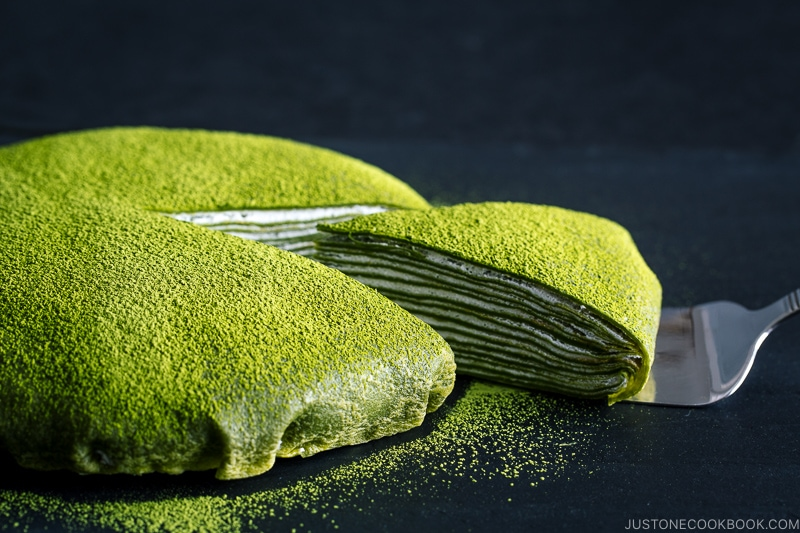

Matcha Mille Crepe Cake

What is a Matcha Mille Crepe Cake?
Matcha Mille Crepe Cake is a French-Japanese dessert consisting of paper-thin matcha (variant of green tea) crepes
layered with fresh whipped cream and a dusting of green tea powder. It's slight earthy bitterness, creamy, and sweet notes
create a rich experience with every bite. If you are someone who enjoys matcha, I highly recommend you try this cake recipe. Plus it's so pretty!
꒰ This recipe is for 1 serving(10" cake) and is not vegan-friendly. ꒱
Ingredients you will need
- 1 3/4 whole milk
- 3 tbsp sugar + 3 tbsp(set aside for fresh whipping cream)
- 3 large eggs
- 1 1/2 tbsp unsalted butter, melted
- 118g cake flour
- 2 tbsp matcha powder + 2 tsp(set aside for dusting at the end)
- 1/2 tsp baking powder
- Neutral oil
- 1 cup heavy whipping cream
Steps
- Heat milk until it is warm and add 3 tbsp of sugar.
- Whisk eggs in a large bowl and while whisking, add the warmed milk and melted unsalted butter.
- Sift and mix cake flour, 2 tbsp matcha, and 1/2 tsp baking powder.
- Slowly add the dry mix into the batter. Gently whisk to combine until there are no lumps. Do not overmix! Overmixing will
result in rubbery crepes.
- Sift batter into a different bowl to remove any extra lumps.
- Cover the crepe batter bowl with plastic wrap and refrigerate for at least 1 hour.
- Set 12" non-stick pan on low heat. Brush surface with a thin layer of neutral oil once pan is heated. Pour
just enough crepe batter to cover the bottom of the pan. Cook crepe for 2 minutes. Now flip crepe
and cook the other side for about 30 seconds. Remove from pan and set aside on flat surface to cool.
- Repeat previous step except this time switch out to a 10" non-stick pan. Repeat this step with remaining batter, using
only the 10" pan.
- Add ice cubes and water to a large bowl. Set a smaller bowl on top. Add heavy whipping cream and the rest of
sugar(3 tbsp) into the smaller bowl and beat with electric mixer until firm peaks form.
- Find a clean flat surface area to work with. Place 12" crepe and spread whipped cream evenly to cover the center of crepe.
Leave a 2-inch border around edge. Layered cream should be about 3mm thick.
- Place a 10" crepe on top of cream layer. Now spread whipped cream on top of 10" crepe and this time, leave
a 1/2-inch border around edge.
- Repeat previous step with all the 10" crepes. End with final crepe on top.
- Transfer our layered crepes as is onto a piece of large plastic wrap(large enough to wrap entire cake).
- Gather wrap at the corners and pull up above center of cake. Pull snugly so that the edges are smooth and
secure wrap with rubber band. Refrigerate cake like so for at least 2 hours.
- Once ready, unwrap plastic wrap and flip cake over so that large crepe is on top.
- Sift and dust leftover matcha(2 tsp) evenly over top of mille crepe cake.
˚₊‧꒰ა ☆ ໒꒱ ‧₊˚ You're done! You made a matcha mille crepe cake. All that's left is to enjoy this pretty creation!! Pat yourself on
the shoulder for all the hard work you've put into this tedious(and yummy) dessert.
Credit: JustOneCookbook